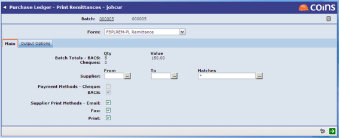

To fax or email remittances:
- Go to the remittance print or reprint function (for example: Print Remittances or Print Remittances).
- Click the link for the relevant remittance batch.
- In the Print Methods fields, whichever methods you want to use.

- If you Email, will email the remittances to:
- All the /subcontractors whose default print method is EMAIL.
- All the /subcontractors whose default print method is blank but who have an email address.
- If you Fax, will fax the remittances to:
- All the /subcontractors whose default print method is FAX.
- All the /subcontractors whose default print method is blank, and who have no email address but have a FAX number.
- If you Print, will print the remittances for:
- All the /subcontractors whose default print method is PRINT.
- All the /subcontractors whose default print method is blank and who have no FAX number or email address.
- Fill in any other fields as necessary.
- Select the Output Options and click
 .
.
In each case produces a PDF output that shows all the transactions that were faxed, emailed or printed - which you can see using Report Status. If the review feature is enabled you need to release faxes and emails in order to send them - see Reviewing Messages.
Configuration
- In Subcontractor Maintenance and :
- Set the Default Print Method field on the individual or subcontractor record.

- Make sure the Email or Fax fields are filled in with the appropriate email address or fax number.
There are utility functions, Update default print method for Subcontractors and Update default print method for , that allow you to update the Default Print Method in bulk.